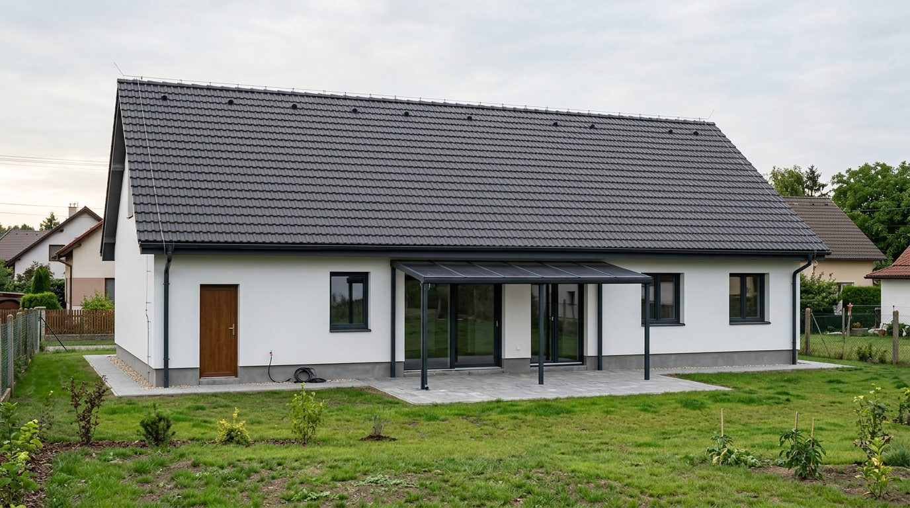
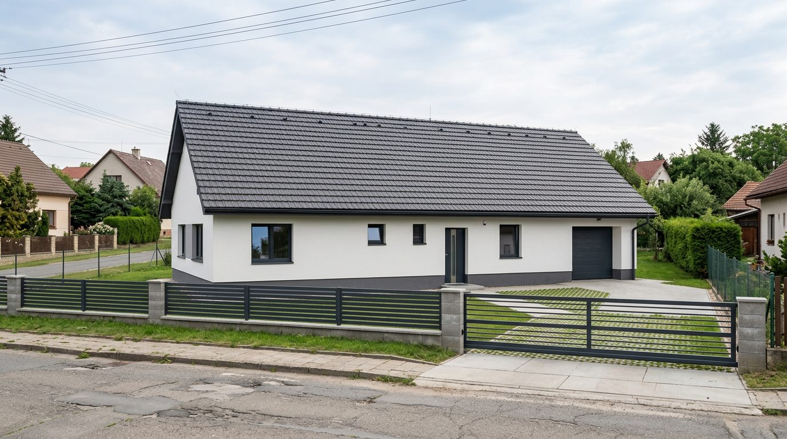
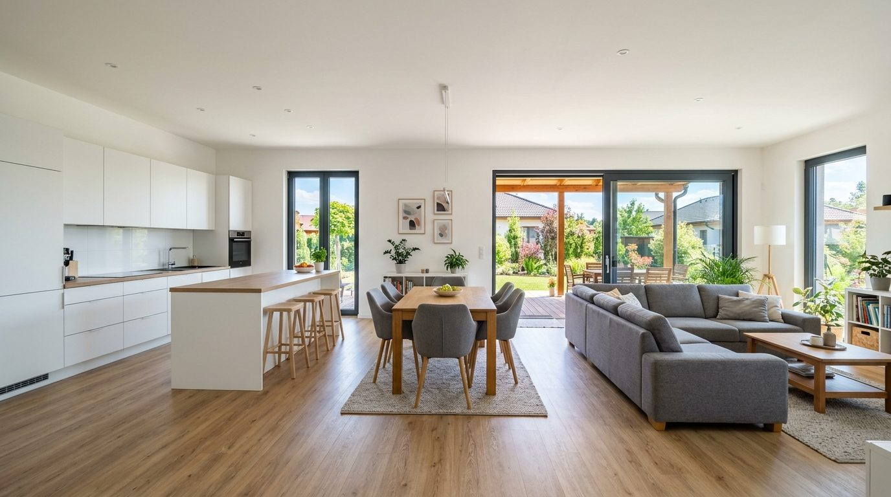

Ukázka · zadání, stavebník i pozemek jsou smyšlené · není to projektová dokumentace
Rodinný dům Ukázkov
Studie ve třech variantách a dokumentace pro povolení stavby podle přílohy č. 1 vyhlášky 131/2024 Sb.: výkresy, textová část, statika, požární řešení a technika prostředí staveb jako návrh. Autorizovaná osoba ho zkontroluje, určí úpravy a podepíše.
Všechno vychází z jednoho BIM modelu (IFC). Z něj vznikají výkresy, plochy místností, výpisy prvků i výpočty. Na konci proběhne křížová kontrola modelu, výkresů a textů.
Stáhnout celou ukázku v jednom PDF (21 stran)


Výkresy (vektorové PDF a DXF)
- C.1 Situační výkres širších vztahů, 1:1000
- C.2 Katastrální situační výkres, 1:500
- C.3 Koordinační situační výkres, 1:200 sítě, přípojky, vsak, PNP, bilance ploch
- D.1.1.2-01 Půdorys 1.NP, 1:50 výpisy místností, oken a dveří
- D.1.1.2-02 Řezy A–A a B–B, 1:50 skladby konstrukcí
- D.1.1.2-03 Pohledy, 1:100
- D.2.3-01 Výkres základů a krovu, 1:50 výpis řeziva
Model, texty, studie
- BIM model IFC4 otevře ArchiCAD, Revit, Allplan
- Textová část A, B, D.1.1, D.1.2, D.2 se statickým výpočtem, D.3, dokladová část
- Architektonická studie, 3 varianty
- Křížová kontrola modelu, výkresů a textů 42 kontrol, 0 chyb